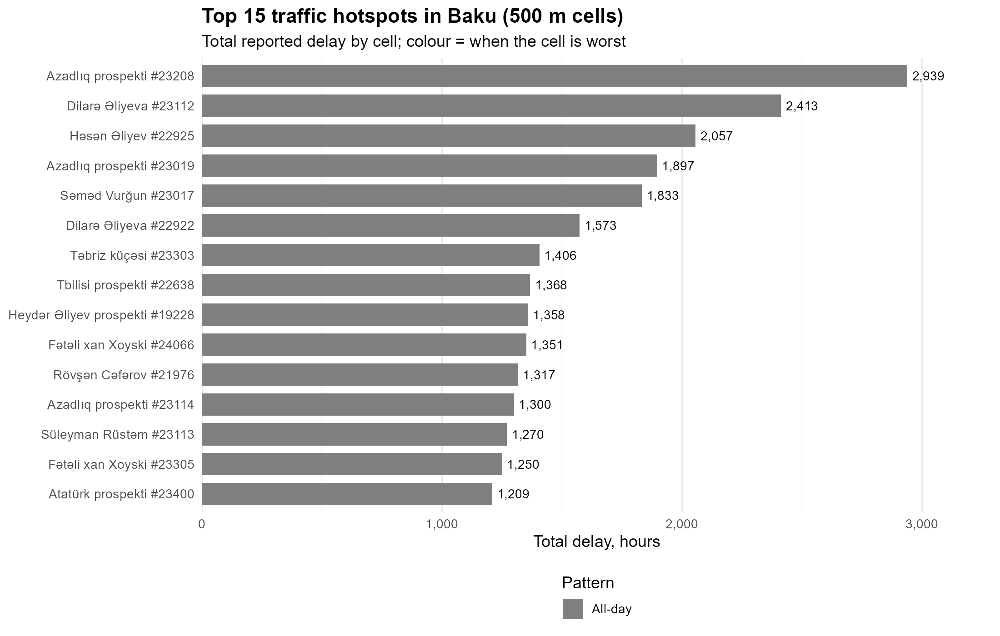

Baku is cut into 500 m hexagons, and each one adds up the delay reported inside it from November 2024 to March 2026.
Switch between all day, the morning peak (07:00–10:59) and the evening peak (17:00–20:59). Click a cell to see its main street, delay and average speed.
TODO: one sentence with your main finding, for example which area holds the darkest cells.
Colour shows when a cell is worst: mornings, evenings or all day.

TODO: how many of the 15 are all-day and how many are rush-hour only.